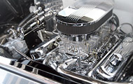

PT. Setiajaya Mobilindo
PenjualanSales
Kami melayani penjualan mobil baru Toyota. Sebagai salah satu dealer resmi toyota, semua mobil yang dijual sudah melewati beberapa tahapan kontrol. Sehingga setiap mobil yang ada dalam keadaan prima.
Lebih Lanjut

Suku CadangSpare Parts
Kami melayani penjualan suku cadang asli Toyota. Sebagai salah satu dealer resmi toyota, semua suku cadang yang kami dijual adalah berkualitas asli toyota. Sehingga suku cadang yang ada benar-benar aman saat digunakan.
Lebih LanjutReparasiRepair
Kami melayani resparasi berbagai mobil Toyota. Bagi kami, perwatan mobil secara rutin adalah hal yang sangat penting. Kami juga memberikan pelayanan terbaik dalam resparasi mobil toyota anda.
Lebih Lanjut